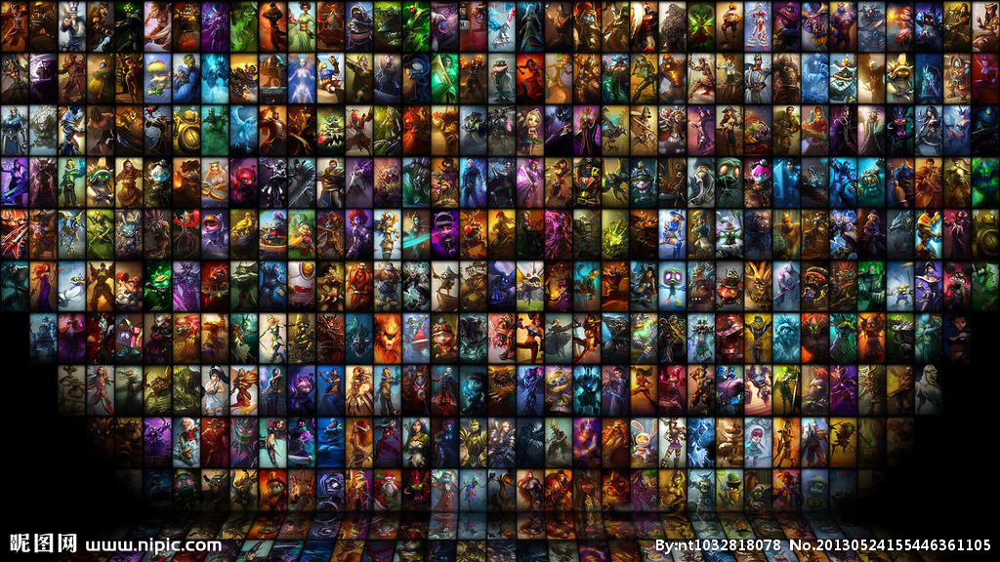
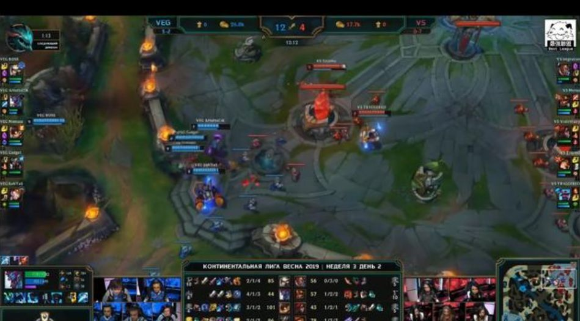
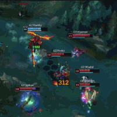
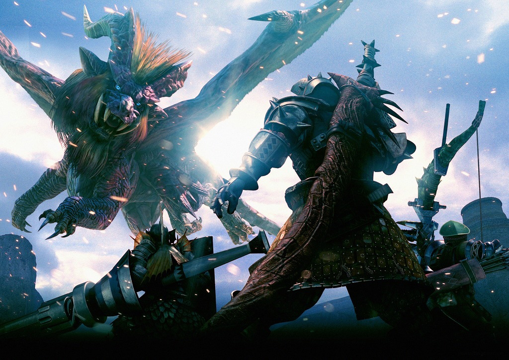
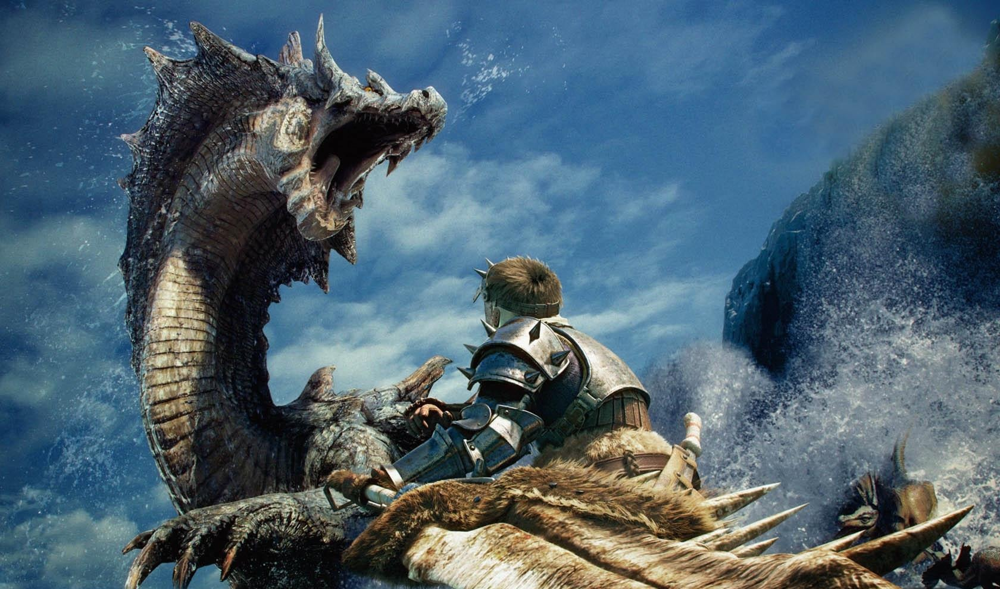
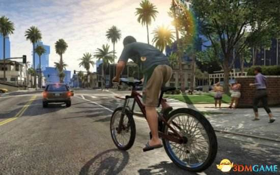

LOL官网
英雄联盟
《英雄联盟》(简称LOL)是由美国拳头游戏(Riot Games)开发、中国大陆地区腾讯游戏代理运营的英雄对战MOBA竞技网游。 游戏里拥有数百个个性英雄，并拥有排位系统、符文系统等特色养成系统。 《英雄联盟》还致力于推动全球电子竞技的发展，除了联动各赛区发展职业联赛、打造电竞体系之外，每年还会举办“季中冠军赛”“全球总决赛”“All Star全明星赛”三大世界级赛事，获得了亿万玩家的喜爱，形成了自己独有的电子竞技文化。 [1] 英雄联盟是一款多人竞技类游戏，于2018年加入亚运会。
  
steam官网

怪物猎人
怪物猎人，原名モンスターハンター ，英文名Monster Hunter，是由CAPCOM研发的一系列动作角色扮演游戏，于2004年03月11日首发行。玩家要在游戏中扮演猎人，不断狩猎怪物，获得装备和金钱，并让自己的猎人等级上升。
 
steam官网


侠盗猎车手五
侠盗猎车手》是由Rockstar Games开发的以犯罪为主题的世界著名游戏，别名有《侠盗飞车》、《横行霸道》等，于1997年发行第一部作品。 [1] 《侠盗猎车手》在黑帮的背景下混合了驾驶、枪战、格斗、养成乃至经营的元素。这款游戏自《侠盗猎车手：罪恶都市》发行以后便迅速占领玩家们的视野，大多数中国玩家从这里开始认识《侠盗猎车手》。
